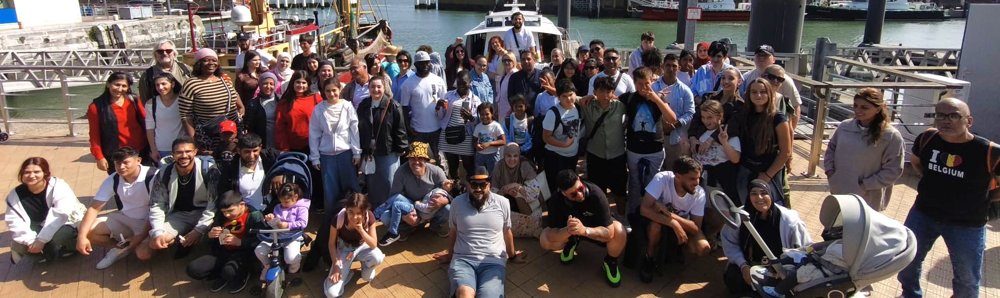

Laatste berichten
Binnenkort volgt hier ons eigen nieuwsoverzicht.
Vluchtelingen Ondersteuning Sint-Niklaas is een onafhankelijke vrijwilligersvereniging die zich belangeloos inzet voor vluchtelingen, ongeacht hun sociale, religieuze of politieke achtergrond, en met bijzondere aandacht voor hen die geen wettige verblijfspapieren hebben.
VLOS biedt hen humanitaire ondersteuning in hun zoektocht naar administratieve begeleiding, materiële hulp en opvang.
VLOS is onderdeel van een breed netwerk en tracht lokaal, regionaal en nationaal op te komen voor een menswaardig bestaan voor vluchtelingen.
In het kort
- VLOS = Vluchtelingen Ondersteuning Sint-Niklaas
- Elke mens is gelijkwaardig en heeft recht op een menswaardig leven
- Verenging waar Armen het Woord Nemen
- +70 vrijwilligers, 2 vaste medewerkers
(over)leven in precair verblijf
Zolang onze mensen zonder wettig verblijf zich in een precaire situatie bevinden, kunnen zij voor materiële hulp beroep doen op de diensten van onze VLOS-kruidenier en onze VLOS-bazar. Deze mensen hebben doorgaans geen financiële middelen en kunnen voor hun dagelijkse benodigdheden nergens terecht. Daarom proberen wij hen kosteloos te voorzien van alle noodzakelijke dagelijkse basisvoorzieningen. Een 70-tal vrijwilligers, waaronder ook vluchtelingen zelf, zijn dagelijks druk in de weer om dit alles in goede banen te leiden. De meeste producten en artikelen zijn afkomstig van bedrijven en particulieren die alles gratis aan VLOS schenken omdat zij weten dat zij hiermee mensen in nood een beter bestaan kunnen geven zolang hun verblijfssituatie niet verbetert.